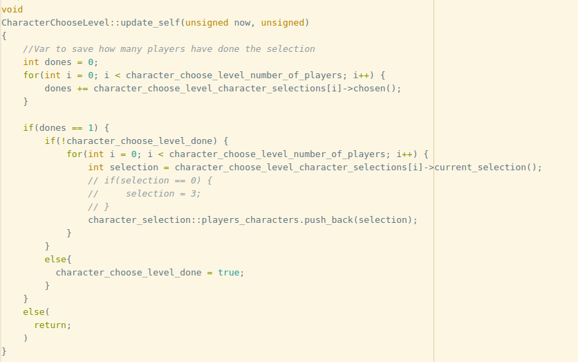
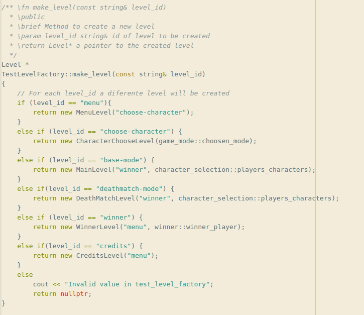
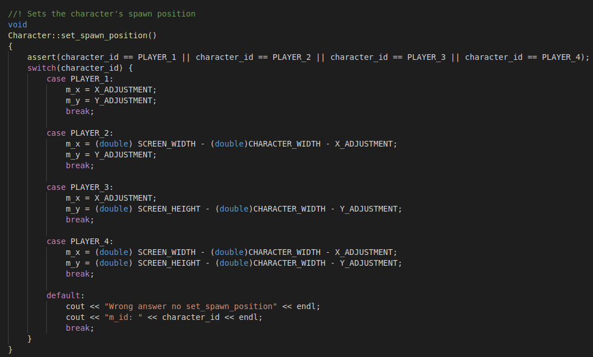
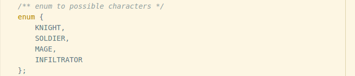
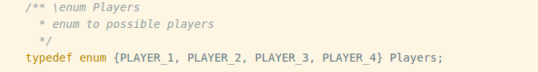
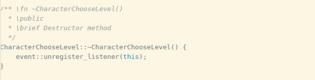
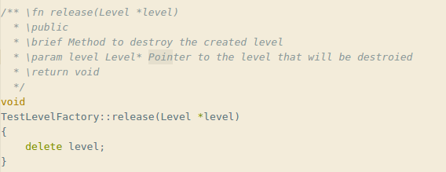
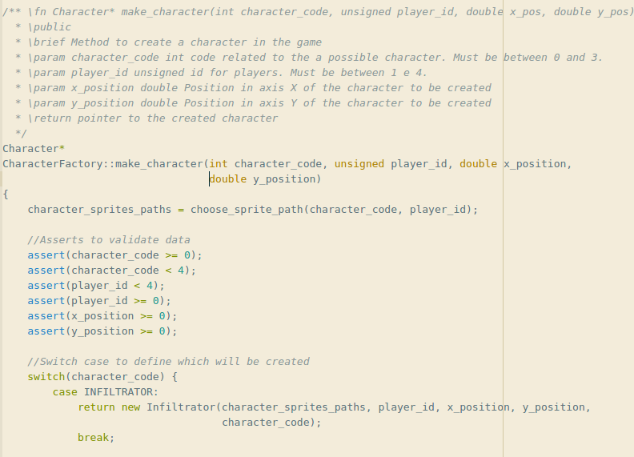
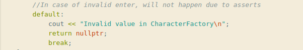

Tecnicas de Programação - Deadly Wish
Modulo - 05
Introdução
O objetivo deste módulo é a aplicação das técnicas de refatoração de código com foco no melhoramento da clareza e simplicidade do código. As maiores preocupações para a execução desse modulo foram preservar uma a boa apresentação do código, para que o caminho "feliz" para a execução do mesmo esteja sempre claro, e mater as contruções logicas e operações o mais simples possíveis, ou seja "Keep it simple!"
Técnicas do Modulo:
Comportamento Default
Está técnica pede que todos as estruturas condicionais do código tenham um comportamento "default", oque siginifica utilizar "elses" para todos os "ifs", e o "case Default" para "switch-cases". caso haja um comportamento inesperado, é necessario que fiquei claro que é uma falha.
Exemplo:

<<<<<<< HEAD 
 =======
=======
 >>>>>>> 670a9426025ea3b551dff6d1738f8ba1abe14451
Tipos descritivos:
Exemplo do uso de enum:


Exemplo do uso de const:

Utilizar recursos com cuidado
Ter cuidado ao utilizar os recursos significa não abusar no momento da alocação de memoria, ou a utilizaçãol de recursos em geral. Para isso é recomendado que classes de objetos tenham sempre métodos destrutores e metodos para "deletar" instacias
Exemplo uso de metódos destrutores:

Exemplo uso de metodos para "liberar" espaço:
Seguir o idioma da linguagem
Quanto mais "aberta" for a linguagem de programação, mais provavel é que cada desenvolver resolva as coisas de seu jeito. Porém é sabido que em muitas linguangens ou tecnologias a um certo padrão que a maior parte da comunidade de desenvolvedores cumprem. Estes padrões facilitam o entendimento do código, quando visto por pessoas de alguma forma habituadas com está tecnologia ou linguagem. Outro ponto importante desta técnica é utilizar um idioma default para a escrita de comentários, a escolha deste deve ser feita tendo em mente qual o idioma onde a maior parte da comunidade de desenvolvedores discutem e apresentam a linguagem.
Exemplo mudança do idioma dos comentários:

Exemplo da utilziação de praticas da comunidade:
Referencias
GOODLIFFE, Pete. Code Craft: The Practice of Writing Excellent Code. No Starch Press; 1 edition (December 15, 2006)